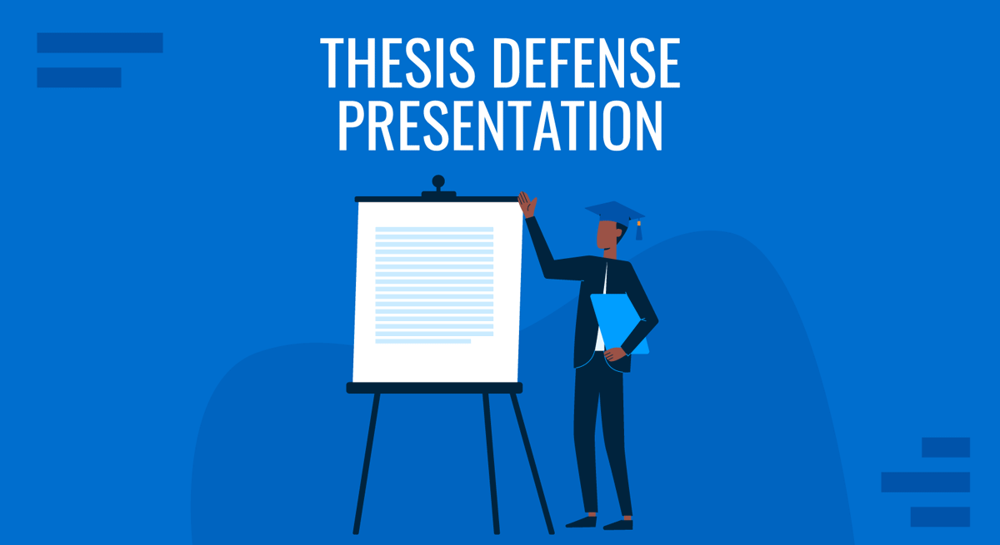
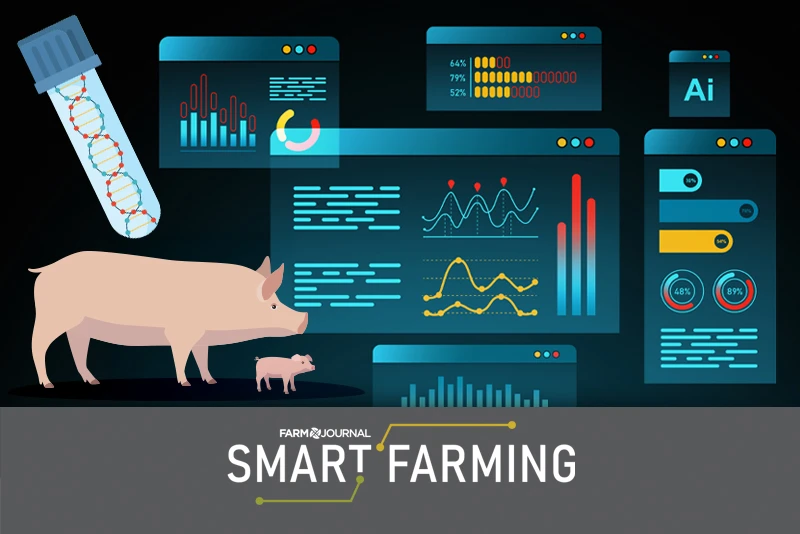
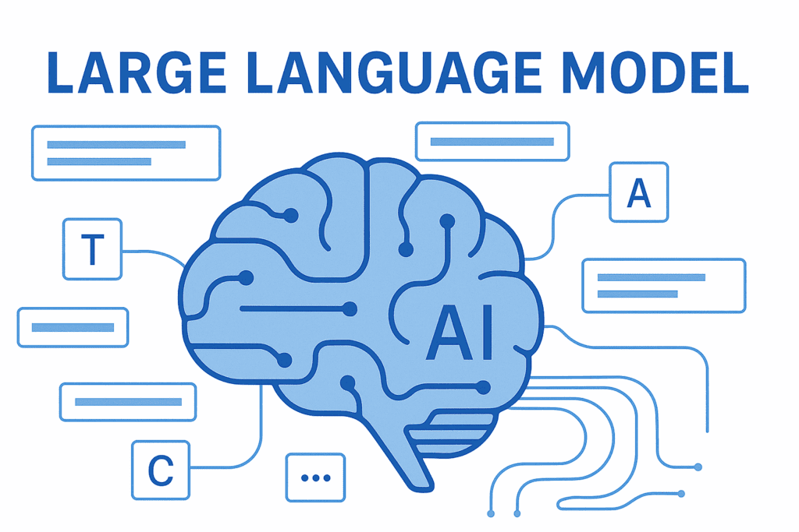
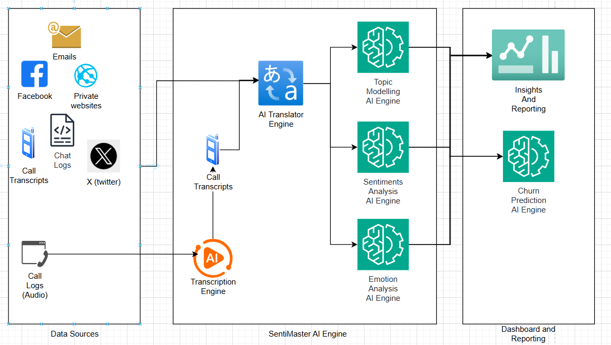
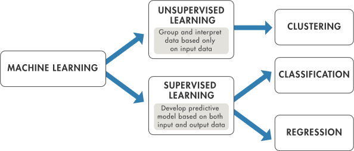
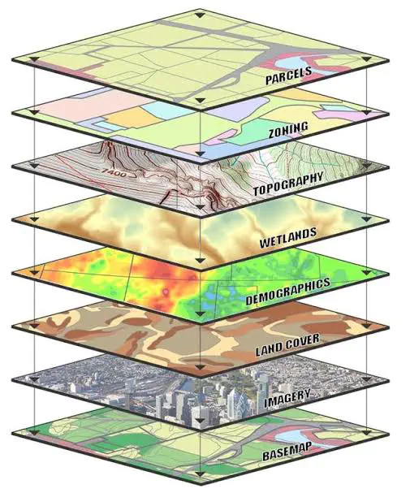
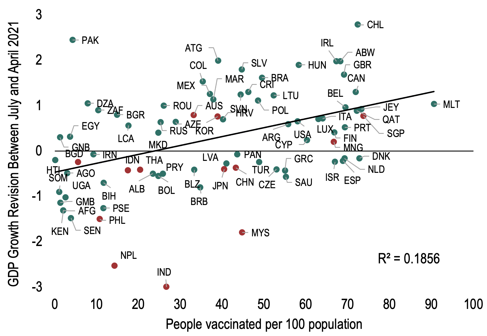
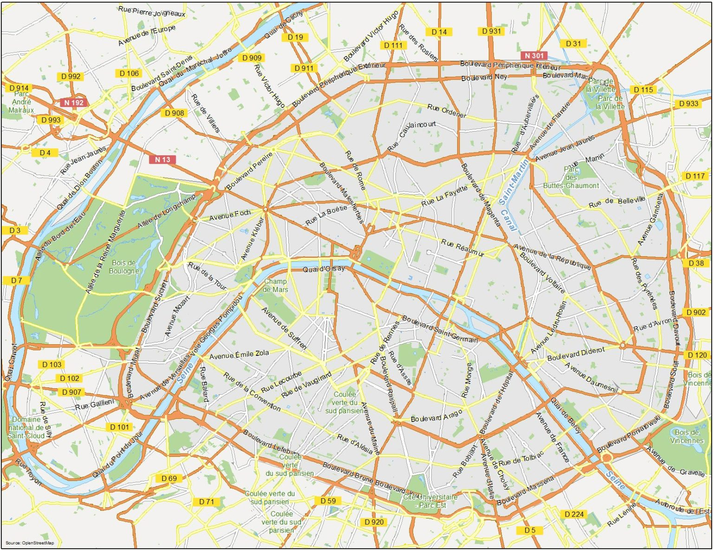

Projects
Here is a selection of projects I have worked on.MPVRP-CC
Proposal for a variant of the multi-product vehicle routing problem with production changeover costs. This problem models the distribution of several products while taking into account cleaning constraints between compartments.
Combinatorial optimization, MILP, Operations research

MDVRP
Implementation and experimentation of heuristic and metaheuristic approaches for solving Vehicle Routing Problems (VRP), including route optimization under capacity and distance constraints. Algorithms included : Linear Programming, Adaptative Large Neighbourhood Search, Particle Swarm Optimization and Simulated Annealing.
Operations Research, VRP, Metaheuristics, MILP

Opti'plan
Optimization system for automated scheduling of thesis defenses at University of Abomey-Calavi. Modeling as a constraint satisfaction problem with hard and soft constraints. Reduction of planning time from 2-3 days to under 5 minutes.
Constraint programming, CSP, Heuristics, OR-Tools, Decision support

EA
Slides and hands-on notebook prepared for the Benin Workshop on Artificial Intelligence 2025. Covers the fundamentals of evolutionary algorithms — genetic algorithms, selection, crossover, and mutation — with practical Python exercises.
Evolutionary Computing, Genetic Algorithms, Optimization, Metaheuristics, AI

proHealth
Symptom-based medical expert system built in Prolog. A knowledge base of diseases and their associated symptoms enables backward-chaining inference to produce diagnostic suggestions from patient input.
Prolog, Logic programming, Expert system, Knowledge representation, Healthcare

CUDA GPU Programming for AI
Introductory workshop materials on GPU programming with CUDA for AI applications. Includes a presentation, a practice notebook covering parallel computing fundamentals, and the reference book "CUDA by Example".
CUDA, GPU programming, Parallel computing, Workshop

Sokoban
Implementation of the classic Sokoban puzzle with an AI solver applying multiple search strategies: DFS, BFS, A*, and Greedy Best-First Search. Includes admissible heuristics (Manhattan distance, greedy matching) with performance comparisons across difficulty levels.
Search algorithms, A*, Heuristics, Artificial intelligence, Python

AI-PigStack
Autonomous optimization IoT system for fattening pig farms integrating multi-objective predictive models. Proof-of-concept phase completed with environmental sensors, ML pipeline for growth prediction and early disease detection.
Smart farming, IoT, Edge computing, Embedded systems

tiny-language-model
From-scratch implementation of an autoregressive language model following GPT architecture (decoder-only transformer). 37M parameter model with 12 layers, trained on the LeCarnet corpus using PyTorch.
Transformer architecture, GPT, PyTorch, Deep learning, NLP

Sentimaster
ETL platform for multilingual semantic analysis of user feedback from X, Hellopeter, and Google Maps. Complete pipeline with API extraction, transcription, sentiment classification, topic modeling, and emotion detection. Airflow orchestration.
Sentiment analysis, BERTopic, Hugging Face, Data engineering, ETL pipeline
Fluxy
Web application for automatic extraction of bank transactions from PDF/image statements via multimodal OCR (Gemini Vision API). Complex table parsing with 90% reduction in manual entry time.
Gemini OCR, Computer Vision, RPA, FinTech, Fullstack Web

ifri-mini-ml-lib
Educational Python library reimplementing foundational ML algorithms from scratch, following the scikit-learn API. Personal contribution: implementation of association rules module with optimizations and PyPI deployment.
Software engineering, Algorithms, Data mining, Association rules, CI/CD, Open source

Le Foncier intelligent
Land analysis solution developed in 72h (LuxDev hackathon) combining multimodal OCR and geospatial data. Geometric data extraction from topographic sketches with satellite imagery cross-referencing.
Geospatial, Gemini OCR, Computer vision, Image classification, Web development

COVID-Vaccine-GDP Analysis
Data analysis project investigating the correlation between COVID-19 vaccination rates and GDP per capita across countries over the 2020-2023 period. Data cleaning and exploratory analysis using R.
R, Data Analysis, Econometrics, ETL Pipeline, Data Cleaning, COVID-19 Vaccination
tech-trends-monitor
Automated RSS monitoring system tracking news about AI Coding Agents and delivering email digests every 3 days. The pipeline downloads RSS feeds, filters articles, and sends formatted digests via GitHub Actions — fully automated.
Automation, RSS, GitHub Actions, Python, AI Agents, Tech Watch

cartographie-immobiliere-automatisee
Automated pipeline for building a qualified database of company executives from Parisian streets. Chains four APIs for address normalization, cadastral parcels, company data, and LinkedIn profile matching.
Data Engineering, ETL Pipeline, Web Scraping, Geospatial, Python, API Integration